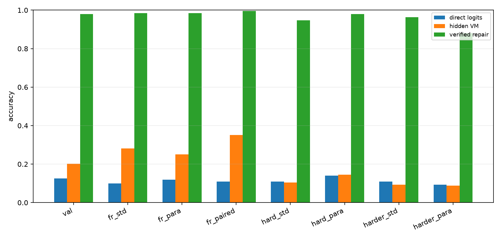
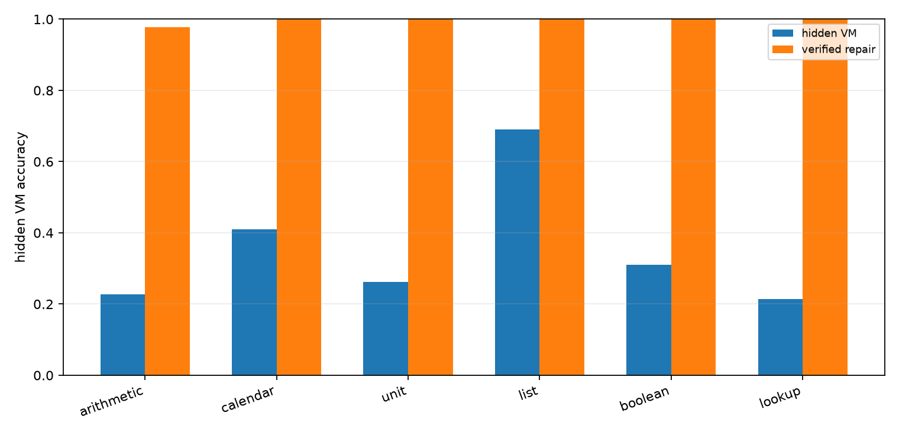
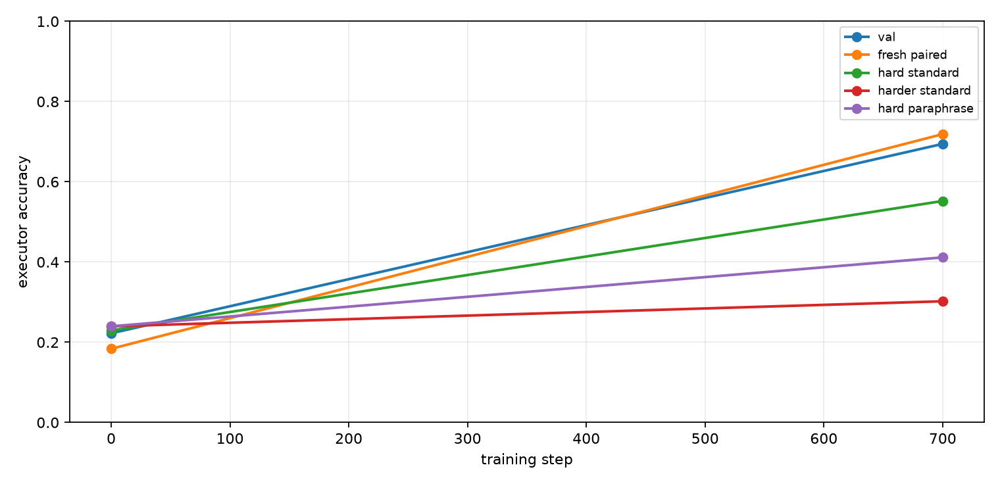
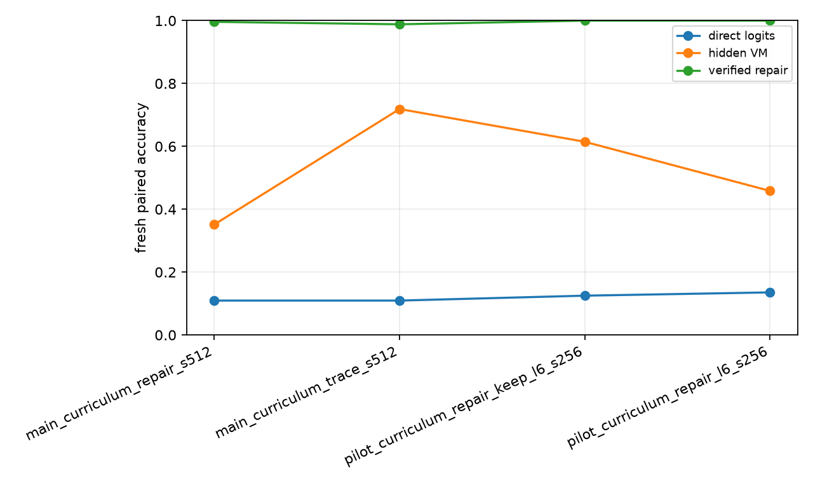

Qwen Hidden VM Curriculum Repair
Abstract
This experiment tests whether a Qwen 4B model can learn a more length-robust hidden virtual-machine compiler when posttraining uses a staged length curriculum followed by verifier-guided program repair. The model emits invisible typed VM slots, a deterministic runtime executes those slots, and a local repair pass searches nearby hidden programs that verify against the known answer.
Setup
- Primary run:
main_curriculum_repair_s512 - Model:
Qwen/Qwen3-4B - Variant:
trace - Train examples:
512 - Train steps:
700 - Repair steps:
220 - VM max steps:
10 - Curriculum schedule:
4:240,6:700 - Train length range:
1to6 - Eval length:
6; hard length:8; harder length:10
The hidden VM uses typed operation slots and copied numeric arguments. Direct logits are the model's next-token numeric answer distribution at the answer marker. Hidden VM accuracy is execution of the compiled invisible program. Repair accuracy is target-aware local search around the compiled program and is reported as a verifier-assisted ceiling, not as a standalone deployable inference path.
Results
Final Splits
| Split | Direct | Hidden VM | Repair | Program exact | Repair exact | State prefix | Repair found |
|---|---|---|---|---|---|---|---|
| val_mixed | 12.5% | 20.1% | 97.9% | 4.9% | 36.8% | 68.1% | 97.9% |
| fresh_standard_mixed | 9.9% | 28.1% | 98.4% | 15.6% | 48.4% | 72.7% | 98.4% |
| fresh_paraphrase_mixed | 12.0% | 25.0% | 98.4% | 8.9% | 30.2% | 64.8% | 98.4% |
| fresh_paired_mixed | 10.9% | 35.2% | 99.6% | 18.0% | 47.3% | 72.1% | 99.6% |
| hard_standard_mixed | 10.9% | 10.4% | 94.8% | 0.0% | 4.7% | 56.0% | 94.8% |
| hard_paraphrase_mixed | 14.1% | 14.6% | 97.9% | 0.0% | 2.6% | 52.0% | 97.9% |
| harder_standard_mixed | 10.9% | 9.4% | 96.4% | 0.0% | 0.0% | 44.1% | 96.4% |
| harder_paraphrase_mixed | 9.4% | 8.9% | 88.0% | 0.0% | 0.0% | 40.6% | 88.0% |
| domain_arithmetic | 0.0% | 12.5% | 100.0% | 9.4% | 50.0% | 66.7% | 100.0% |
| domain_calendar | 9.4% | 40.6% | 100.0% | 31.2% | 50.0% | 78.1% | 100.0% |
| domain_unit | 3.1% | 9.4% | 100.0% | 6.2% | 50.0% | 69.8% | 100.0% |
| domain_list | 3.1% | 53.1% | 100.0% | 0.0% | 6.2% | 69.3% | 100.0% |
| domain_boolean | 40.6% | 37.5% | 100.0% | 21.9% | 50.0% | 68.2% | 100.0% |
| domain_lookup | 0.0% | 12.5% | 84.4% | 3.1% | 18.8% | 61.5% | 84.4% |

Domain Breakdown
| Domain | n | Direct | Hidden VM | Repair |
|---|---|---|---|---|
| arithmetic | 44.00 | 0.0% | 22.7% | 97.7% |
| calendar | 44.00 | 18.2% | 40.9% | 100.0% |
| unit | 42.00 | 0.0% | 26.2% | 100.0% |
| list | 42.00 | 4.8% | 69.0% | 100.0% |
| boolean | 42.00 | 42.9% | 31.0% | 100.0% |
| lookup | 42.00 | 0.0% | 21.4% | 100.0% |

Training Dynamics
Fresh paired hidden VM accuracy moved from 18.4% at initialization to 35.2% after the full treatment. Verified local repair on the same split reaches 99.6%. The matched trace-only control scores 71.9% on fresh paired, 55.2% on hard length 8, and 30.2% on harder length 10.

Repair Target Quality
The repair-target pass built 512.00 training targets from 512.00 source examples. Verified repairs were found for 100.0% of source examples, changed-program repairs for 11.3%, with an average of 151.44 local candidates per source example.
Run Summary
| Run | Variant | Direct | Hidden VM | Repair | Program exact | State prefix |
|---|---|---|---|---|---|---|
| main_curriculum_repair_s512 | trace | 10.9% | 35.2% | 99.6% | 18.0% | 72.1% |
| main_curriculum_trace_s512 | trace | 10.9% | 71.9% | 98.8% | 55.9% | 77.3% |
| pilot_curriculum_repair_keep_l6_s256 | trace | 12.5% | 61.5% | 100.0% | 45.8% | 70.8% |
| pilot_curriculum_repair_l6_s256 | trace | 13.5% | 45.8% | 100.0% | 18.8% | 55.0% |

Interpretation
The primary measurement is fresh paired mixed-domain accuracy. Direct logits score 10.9%, while the repair-distilled hidden VM scores 35.2% (+24.2 pp). The matched trace-only curriculum control scores 71.9%, so the repair-distillation treatment changes fresh paired accuracy by -36.7 pp. Verified local repair scores 99.6%, showing that nearby executable headroom remains high even when the argmax compiler is poor.
Program-exact accuracy after repair distillation is 18.0% and state-prefix accuracy is 72.1%. The trace-only control is the best deployable model in this experiment, not the repair-distilled treatment. The repair target pass found verified targets for 100.0% of source examples, but only 11.3% were changed-program repairs; the subsequent no-selection repair phase moved the compiler away from its stable token-local policy.
The hard-length splits are the decisive stress test. The trace-only control trains up to length 6 and reaches 55.2% at length 8 and 30.2% at length 10. The repair-distilled run falls to 10.4% and 9.4% on those same splits.
Decision
This experiment should be read as a split result. The length curriculum is useful and should be retained. Target-aware local repair is also highly informative: it shows that the model's top-k neighborhood usually contains a correct executable program. The failed part is naive repair distillation from final-answer-verified programs. The next experiment should not simply add more repair steps; it should either distill canonical traces selected by a state-aware verifier, or train a verifier/reranker for inference-time candidate selection before trying to fold repairs back into the compiler.
Limitations
- The domains are synthetic and deterministic.
- Answers are integers in a bounded value vocabulary.
- Trace supervision supplies exact hidden programs during the curriculum phase.
- Repair accuracy is target-aware and should be read as verifier-assisted headroom.
- The runtime is fixed and hand-designed.
- This is one primary run unless additional runs are added.
Artifacts
Small experiment files live in:
experiments/qwen_hidden_vm_curriculum_repair/Large artifacts live in:
large_artifacts/qwen_hidden_vm_curriculum_repair/checkpoints/Primary files:
analysis/summary.mdanalysis/final_metrics.csvanalysis/all_final_metrics.csvanalysis/figures/split_accuracy.pnganalysis/figures/domain_accuracy.pnganalysis/figures/training_curve.pnganalysis/figures/run_summary.pngruns/main_curriculum_repair_s512/metrics.csvruns/main_curriculum_repair_s512/train_log.csvreports/qwen_hidden_vm_curriculum_repair_paper.mdreports/qwen_hidden_vm_curriculum_repair_paper.htmlcheckpoint_manifest.csv